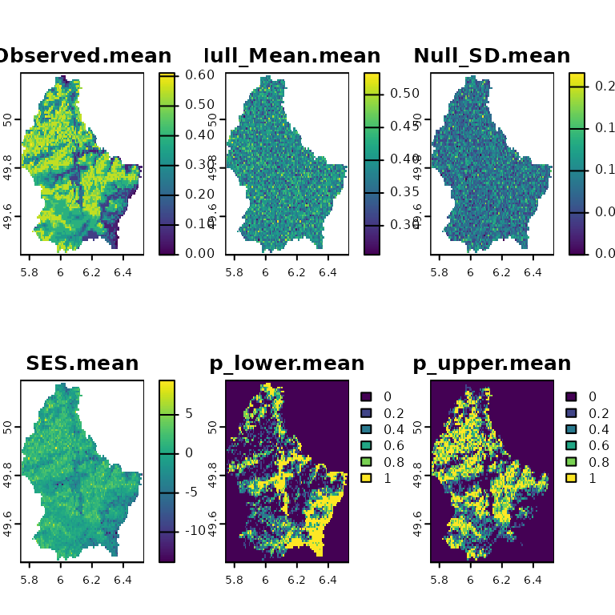
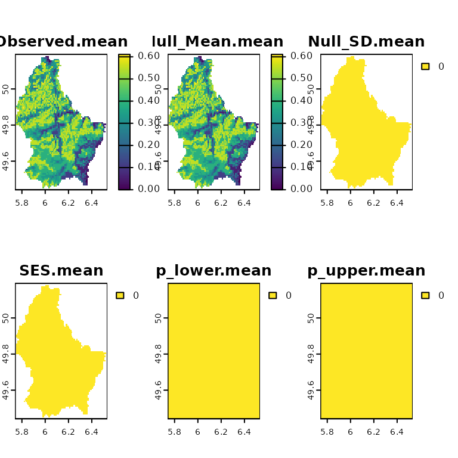
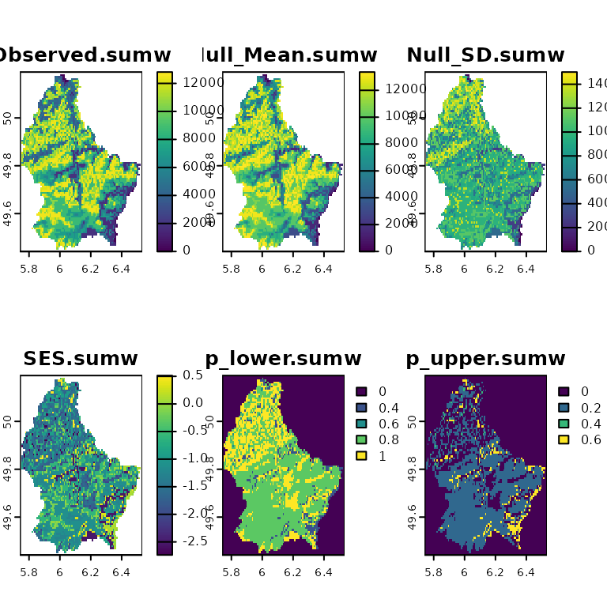

Standardized effect sizes
Neander M. Heming, Flávio Mota, and Gabriela Alves-Ferreira
2023-08-10
Source:vignettes/SES.Rmd
SES.RmdContents
After understanding how the spatial null model algorithms work
(vignette("spatial-null-models")), let’s see how to create
multiple null models and test for the effect size using
SESraster().
Standardized effect size
Standardized effect size (SES) is a measure of the magnitude of the studied effect. It indicates the direction and the degree that the effect departures from the null model. SESraster uses Cohen’s d (Cohen 1988), which is measured as the difference between the observed pattern and the average of n randomized observations divided by the standard deviation of the randomized observations \(SES = (Obs-mean(Null))/sd(Null)\).
Calculating SES
Random species generation
First, we will create some random species distributions using the
package terra.
library(SESraster)
#> This is SESraster 0.7.0
#> If you use SESraster, please cite in your publications. See:
#> citation("SESraster")
library(terra)
#> terra 1.7.39
# creating random species distributions
f <- system.file("ex/elev.tif", package="terra")
r <- rast(f)
set.seed(510)
r <- rast(lapply(1:18,
function(i, r, mn, mx){
app(r, function(x, t){
sapply(x, function(x, t){
x<max(t) & x>min(t)
}, t = t)
}, t = sample(seq(mn, mx), 2))
}, r = r, mn = minmax(r)[1]+10, mx = minmax(r)[2]-10))
names(r) <- paste("sp", 1:nlyr(r))
plot(r)With the distributions in hand, we can perform the spatial randomizations.
SES with spatial randomization
First we need a function that computes the desired metric. The function must work with spatial data. Just to exemplify, we are creating a function to compute the mean of presences and absences (1/0) within each cell. You probably wants to use a more ecologically meaningful function, but here is just an example of use.
appmean <- function(x, ...){
terra::app(x, "mean", ...)
}Now, to compute SES, we will compute our desired metric by sending
our function appmean() to SESraster() through
FUN argument. We also randomize the original data by
species using the bootspat_naive() algorithm
and passing the argument random="species" through
spat_alg_args.
ses.sp <- SESraster(r, FUN = appmean,
spat_alg = "bootspat_naive", spat_alg_args = list(random = "species"),
aleats = 5)
plot(ses.sp)
Compute metric and SES using bootspat_naive() and
randomize by site changing the argument to
random="site" in spat_alg_args.
ses.st <- SESraster(r, FUN = appmean,
spat_alg = "bootspat_naive", spat_alg_args = list(random = "site"),
aleats = 5)
plot(ses.st)
Passing arguments to FUN
It is also possible to send arguments to the function that calculates
the desired metric (FUN). It can be done by sending a list
of arguments through FUN_args.
## let's create some missing values for layer/species 1
r2 <- r
set.seed(10)
cellsNA <- terra::spatSample(r2, 30, na.rm = TRUE, cells = TRUE, values = FALSE)
r2[cellsNA][1] <- NA
# plot(r)
set.seed(10)
sesNA <- SESraster(r2, FUN = appmean, FUN_args = list(na.rm = FALSE),
spat_alg = "bootspat_naive", spat_alg_args=list(random = "species"),
aleats = 5)
head(sesNA[cellsNA])
#> Observed.mean Null_Mean.mean Null_SD.mean SES.mean
#> 1 NA NA NA NA
#> 2 NA NA NA NA
#> 3 NA NA NA NA
#> 4 NA NA NA NA
#> 5 NA NA NA NA
#> 6 NA NA NA NA
plot(sesNA)
Notice that NAs can be ignored by the appmean() function
by using FUN_args = list(na.rm = TRUE):
set.seed(10)
ses.woNA <- SESraster(r2, FUN = appmean, FUN_args = list(na.rm = TRUE),
spat_alg = "bootspat_naive", spat_alg_args=list(random = "species"),
aleats = 5)
head(ses.woNA[cellsNA])
#> Observed.mean Null_Mean.mean Null_SD.mean SES.mean
#> 1 0.11764706 0.3882353 0.08921030 -3.0331502
#> 2 0.41176471 0.3882353 0.08921030 0.2637522
#> 3 0.41176471 0.4117647 0.09300817 0.0000000
#> 4 0.05882353 0.3647059 0.07669650 -3.9882179
#> 5 0.35294118 0.4000000 0.07669650 -0.6135720
#> 6 0.52941176 0.4941176 0.08921030 0.3956283
plot(ses.woNA)SES from species trait randomization
In addition to the spatial randomizations, it is possible to create a
null model by randomizing a parameter (i.e. argument) of the metric
passed to FUN. This is useful, for example, to randomize a species trait
(e.g. branch length) that is used to compute the metric. In the example
below the function appsv() uses the argument
lyrv to compute the fictional metric. We also create some
fictional values for the trait.
## example with `Fa_alg`
appsv <- function(x, lyrv, na.rm = FALSE, ...){
sumw <- function(x, lyrv, na.rm, ...){
ifelse(all(is.na(x)), NA,
sum(x*lyrv, na.rm=na.rm, ...))
}
stats::setNames(terra::app(x, sumw, lyrv = lyrv, na.rm=na.rm, ...), "sumw")
}
set.seed(10)
trait <- sample(100:2000, nlyr(r))
trait
#> [1] 590 1772 1453 467 1583 538 1707 1561 1546 1634 1846 443 1394 242 1037
#> [16] 1578 1998 1029In this exapmle, no spatial randomization will be performed, only
trait randomization. To select the trait to be randomized, pick
the desired argument of FUN_args using
Fa_sample and the name of the desired argument (here
“lyrv”). Then select a function, here “sample” is used. It is also
possible to send arguments to the function in Fa_alg
through Fa_alg_args. It works in the same way that
arguments are sent to FUN and spat_alg through
FUN_args and spat_alg_args.
In this first
example it is performed a trait sampling without
replacement.
set.seed(10)
ses <- SESraster(r, FUN = appsv,
FUN_args = list(lyrv = trait, na.rm = TRUE),
Fa_sample = "lyrv",
Fa_alg = "sample", Fa_alg_args = list(replace = FALSE),
aleats = 5)
plot(ses)
In this second example it is performed a trait sampling
with replacement by passing replace = TRUE
through Fa_alg_args.
set.seed(10)
ses <- SESraster(r, FUN = appsv,
FUN_args = list(lyrv = trait, na.rm = TRUE),
Fa_sample = "lyrv",
Fa_alg = "sample", Fa_alg_args = list(replace = TRUE),
aleats = 5)
plot(ses)